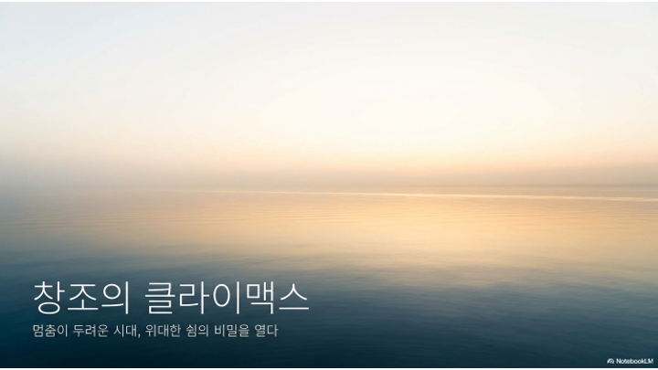

2026.07.19 주일 설교 묵상
지금도,
창조하고 계십니다
스티커 대신 말씀을 붙들고, 혼돈에서 새로운 피조물로 걸어가는 7일의 여정
주일 설교 다시보기
설교 영상은 준비 중입니다.
업로드되는 대로 이 자리에 연결됩니다.
설교 요약: 하나님은 혼돈하고 공허하고 캄캄한 그 자리를 떠나지 않으시고 지금도 품고 계십니다. 말씀이 임하면 질서가 서고, 그 순종의 자리에 하나님의 은혜가 채워집니다. 우리는 그렇게 조금씩 새롭게 믿음 안에 세워져 갑니다 — 하루아침이 아니라, 말씀과 순종이 반복되는 과정을 통해서요.
주일 설교 슬라이드
1 / 23

좌우 화살표를 눌러 슬라이드를 넘겨보세요.
매일 이렇게 새로워지세요
- 정직한 인정: 오늘 내 마음의 혼돈·공허·흑암이 무엇인지 숨기지 않고 하나님 앞에 꺼내놓습니다.
- 말씀 읽기: 오늘 주어진 본문과 해설을 천천히 읽으며 주님의 음성을 듣습니다.
- 순종 하나: 마음에 주신 순종할 일을 미루지 않고, 오늘 안에 실제로 행합니다.
- 결단과 체크: 오늘의 결단을 기도로 올려드리고 묵상 완료 체크를 합니다.
요일별 묵상 여정
월요일
제목
성경구절